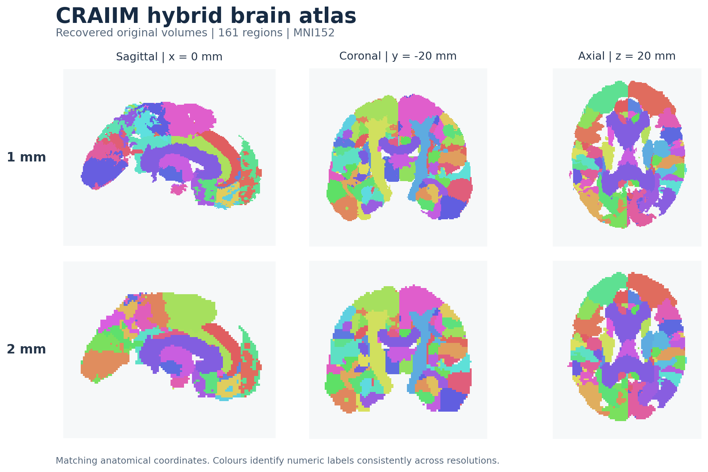

Histological foundation
Start from the Jülich atlas maximum-probability labels in MNI152 space. Preserve its 121 anatomical assignments.
A research atlas that brings cytoarchitectonic and anatomical regions into one coherent framework. Explore the 161-region CRAIIM parcellation in MNI152 space.

Consistent ROI indices across both resolutions
Histological parcellation, retained in the merge
38 cortical and 2 subcortical regions
Two historical MNI152 label-map grids
Navigate anatomical slices in MNI152 space. Use the original NIfTI volume from your own computer; it never leaves your browser.
Search the complete original label nomenclature and compare volumes measured in the recovered 1 mm and 2 mm files.
| ROI | Anatomical region | Source | Volume · 1 mm (mm³) | Voxels |
|---|
A documented integration procedure, rather than a new anatomical segmentation.
Start from the Jülich atlas maximum-probability labels in MNI152 space. Preserve its 121 anatomical assignments.
Add 40 selected regions from the Harvard–Oxford cortical and subcortical atlases, preferentially filling anatomical gaps.
Give Jülich precedence: a Harvard–Oxford region contributes only where the Jülich map is background. Retain labels 1–161.
Credit the CRAIIM team and the original source atlases when using these data in research.
Vergani · Minotto · Strocchi · Binaghi
Read abstract ↗Vergani · Minotto · Strocchi · Binaghi
Proceedings reference ↗Alberto Arturo Vergani · University of Insubria
Read thesis ↗